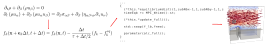

Numerical Methods : Physics 9610 Module#
Target audience#
Graduate students with a background in numerical methods and some rudimentarly python programming skills
Course material & assessment#
The formalities, schedule, assignments etc. are available at OWL
Lecture material is distributed via this web site.
Assignments are available on OWL.
Assessment criteria are listed on OWL.
Special notes about lecture material#
This site is updated continuously. New material is being added as we progress and typos (sigh!) will be corrected.
When reading the files, please notice that there
tabsanddropdownsthat have more information and/or, code snippets or/and operating system specific installation instructions.These pages also support hypothes.is annotations (the little arrow at the top right hand corner). Using hypothes.is allows you annote the text, make notes etc. The annotations and notes can be private, public or visible to a group (the course in this case; let me know if you want to join the group). This is entirely optional so try it out and see if you like it. The service requires registration but it is free.
Learning outcomes#
After successful completion of this course, the student should have the reviewed and solidified skills and knowledge to
gain an understanding of basic numerical algorithms and how to apply them,
understand and evaluate errors and efficiency when numerical algorithms are applied to solve mathematical problems,
be able to critically asses numerical algorithms and choose one appropriate for a specific mathematical problem.
As a practical outcome, the students should learn the need for different operating systems and command interfaces, and how to do practical operations using the command line interface, installation of software, compilation of source codes and how to resolve problems when they arise.
Hands-on approach#
This course uses a hands-on approach: You will write scripts and short programs, analyze data and learn methods.
Python will be used for most analyses. rudimentary knowledge of Python or other programming is expected.
Computers#
This is a hands-on course and requires programming. This means that you must have a computer and the ability to install software on it. Any reasonably modern (past 7 years or so) laptop/desktop with Windows 10 or 11, Linux or MacOS should be ok. The methods have been tested using both older (7-10 old laptops) and newer computers.
The examples and tasks have been tested on Linux, Windows and Intel-based Macs.
Due to no access to Apple M1-based or ARM-based systems, none of the examples have been tested on them.
Important
Some tasks can be CPU (or even GPU) intensive. To avoid overheating, thermal shutdown or, in the worst case, damage to your computer, always ensure that the ventilation openings are not covered. This is of utmost importance and the responsibility is solely yours.
Software#
Primary software that will be used (we will work through the installation procedures during the course):
For plotting, data analysis, and machine learning: Python and Jupyter Lab / Notebook.
C/C++ compiler
Possibly some others as well.